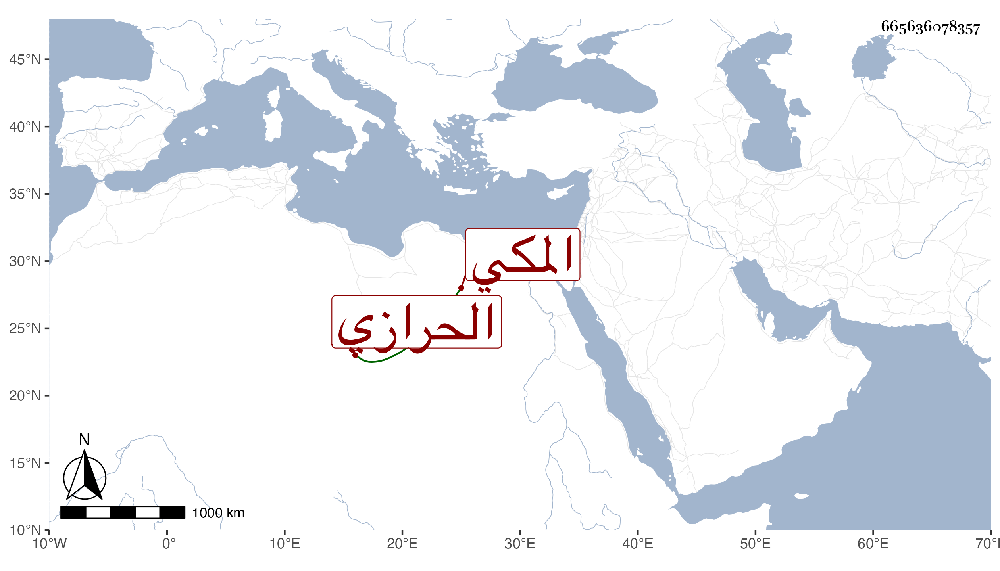

0902Sakhawi.DawLamic.ITO20230111-ara1.EIS1600.665636078357
Biography ID: 665636078357
689
عبد القادر بن أحمد بن أبي الفضل محمد بن عبد الله محيي الدين الحرازي الأصل المكي الآتي أخوه الجمال محمد . مات بها في ليلة الجمعة ثالث عشري ذي الحجة سنة خمس وثمانين وصلى عليه بعد الصبح عند باب الكعبة ودفن عند أهله بالمعلاة . وكان مباركا متقشفا فقيرا ربما عامل الفقراء مع يبس وإن كان يتفقد بعض أهل البيوت منهم .
